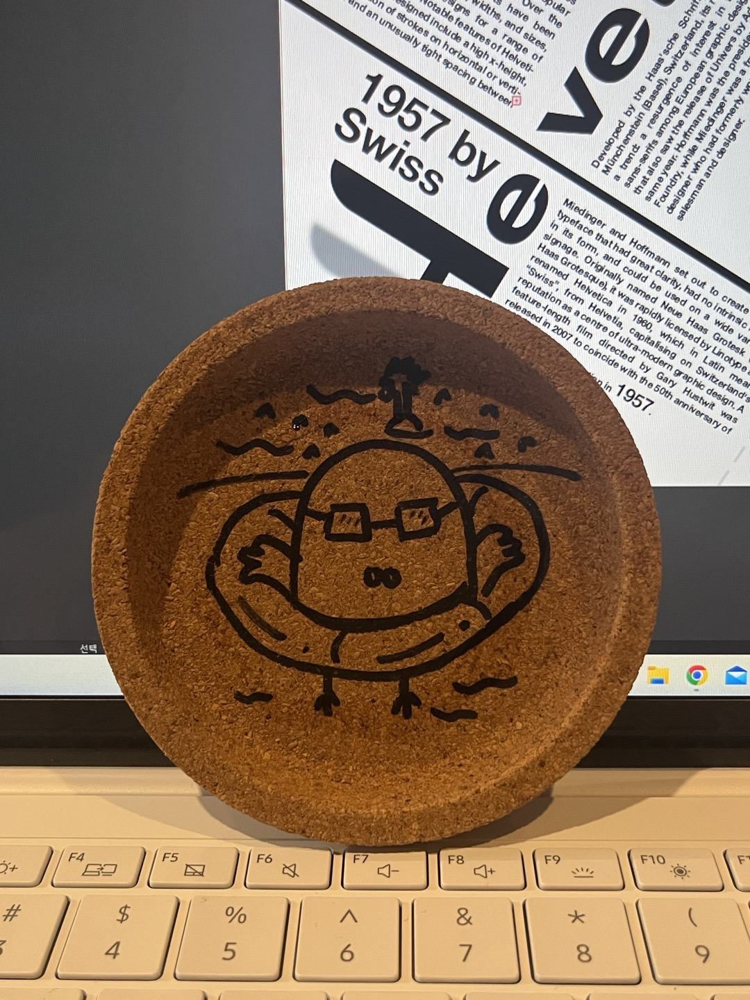

비둘기 컵받침
'비둘기는 멍청해 보여'라는 카페에서 본 컵 받침이다. 멍청한 비둘기의 느낌을 잘 표현한 것 같다. 아이가 그린 듯이 삐뚤빼뚤한 선, 비둘기의 맹한 표정이 멍청하다는 느낌을 준다. 또한 잔 속의 음료와 얼음이 둥둥 떠있는 모습과 컵 받침 캐릭터가 튜브를 낀 채로 물 위에 떠있는 모습이 비슷해 보인다. 그리고 컵 받침의 재질을 코르크 한 점도 친근한 카페의 이미지와 잘 어울린다.
'비둘기는 멍청해 보여'라는 카페에서 본 컵 받침이다. 멍청한 비둘기의 느낌을 잘 표현한 것 같다. 아이가 그린 듯이 삐뚤빼뚤한 선, 비둘기의 맹한 표정이 멍청하다는 느낌을 준다. 또한 잔 속의 음료와 얼음이 둥둥 떠있는 모습과 컵 받침 캐릭터가 튜브를 낀 채로 물 위에 떠있는 모습이 비슷해 보인다. 그리고 컵 받침의 재질을 코르크 한 점도 친근한 카페의 이미지와 잘 어울린다.
호랑이 그림과 그 밑에는 불규칙하게 낙서가 된 종이가 있다. 대조적으로 호랑이 그림은 불규칙해 보이지만 자세히 보면 정렬되어 있다. 숲을 표현하는 선들은 세로로 그렸고, 호랑이 무늬는 구체적인 윤곽선이 보이지는 않지만 검은색 털 부분으로 배경과 구분을 지었다. 비스듬히 있지 않고 정면을 바라보게 그리니 사나움보다 친근함이 느껴졌다. 방향에 따라 느낌이 다를 수 있다는 것을 깨달았다.
내 가방에 달린 '유리 토끼 인형'이다. 인형은 사람과 비슷하게 만들지만 신체의 구조가 명확하게 구분 지어지지 않는다. 이 인형은 신체를 구분 지을 수 있는 목과 팔을 선으로 표현하였다. 보통의 인형들은 팔과 몸통을 분리시켜서 선으로 표현하지 않지만 이 인형은 하나의 몸체로 선으로 구분 지은 부분이 신기했다.
카페에서 과제를 하던 중 고개를 돌리자 보였던 풍경이다. 감성을 추구하는 카페여서 이쁘게 꾸며놓았다. 거칠고 자연의 느낌이 강한 나무와 반대로 금속으로 이루어진 여러 색들의 매끈한 의자들이 상반되는 분위기를 가지고 있다. 나무는 온화하고 따뜻해 보이는 반면 의자는 딱딱하고 만졌을 때 굉장히 차가워 보인다.
평소처럼 메이크업을 하던 도중 쿠션에 적혀 있는 브랜드 로고가 되게 참신하다고 생각되었다. 롬 앤(romand)에서 a를 '그리고'라는 뜻의 기호인 &(and)로 대체하여 표현했다. 난 이런 식의 사람들의 이목을 끌만한 아이디어를 내는 데에는 소질이 있는 것 같지 않다. 하지만 디자이너라는 꿈을 이루기 위해선 이러한 부분들을 더 관찰하고 깊게 고민해 보아야 한다.
흑과 백만 존재하는 장소에 눈에 띄게 쩅한 붉은빛의 꽃 한 송이가 있었다. 선인장과 무척 닮았는데 정확히 무엇인 지는 모르겠다. 나도 지금은 회색의 벽과 같은 존재일 수도 있다. 하지만 언젠간 저 꽃처럼 빛나는 존재가 되고 싶다.
밤 9시, 하교하던 길 어두운 거리를 밝게 만들어 주고 안심 시켜주는 그림이다. 여성을 대상으로 하는 범죄가 많이 일어남에 따라 안심 귀갓길에 이런 그림이 많이 있다. 바닥에 있으면 오히려 뒤에 누가 오는지 모르지 않을까? 바닥은 보행자의 시선이 아래로 갈 뿐만 아니라 좌우를 살피기 어려울 것이다. 범죄를 줄이고자 한다면 목적에 맞게끔 디자인을 할 필요 있다고 생각한다.
간판에 적힌 문구와 글씨체가 조화로워 보여 찍었다. 멍청하다는 이미지에 맞게 어린아이가 적은 듯한 글꼴을 사용하였다. 그러한 유머스러운 이미지 덕분에 이곳에 관심이 생겼다. 처음엔 새와 관련된 가게인 줄 알았다. 하지만 예상과 달리 그곳은 카페였다. 안으로 깊숙이 들어가야 하는 위치의 불리함을 극복할 수 있는 좋은 문구와 디자인이 아닌가 생각을 했다.
집으로 돌아가는 길 매일 지나치는 벽화이다. 그림으로 웃는 표정과 글로 표시를 한 이 그림은 글만 적은 것보다 주는 메시지가 더 크다. 무엇이든 말하면 다 들어줄 것 같은 온화한 표정이 고된 하루를 보낸 시민들에게 조금이나마 옅은 미소를 지을 수 있게 한다. 그림이 사람의 감정이나 생각에 많은 영향을 끼치는 것 같다. 좋은 그림을 주변에서 자주 볼 수 있으면 세상이 좀 더 밝아지지 않을까?
집으로 돌아가는 어두운 밤 속 밝게 빛나는 '도심 속 힐링' led 간판이다. 이 공원은 나무와 꽃들이 정말 많다. 그와 어울리도록 배경색을 초록색으로 하여 자연친화적인 느낌을 주고 오른쪽 위의 새의 형상이 있어 새소리가 들리는 듯하다. '힐링'이라는 분위기에 적합한 디자인이다. 하지만 '힐링'이라는 단어와는 거리가 먼 곳이었다. 공원은 노상 방뇨와 자욱한 담배 연기로 가득 차 있었다. 밝은 분위기의 간판과 상반되는 공원의 모습에 실망감이 들었다.